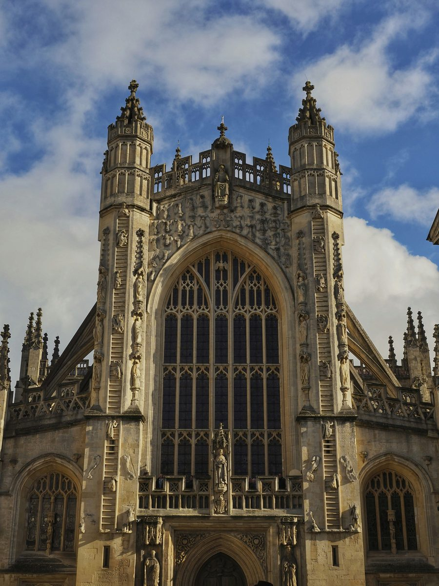
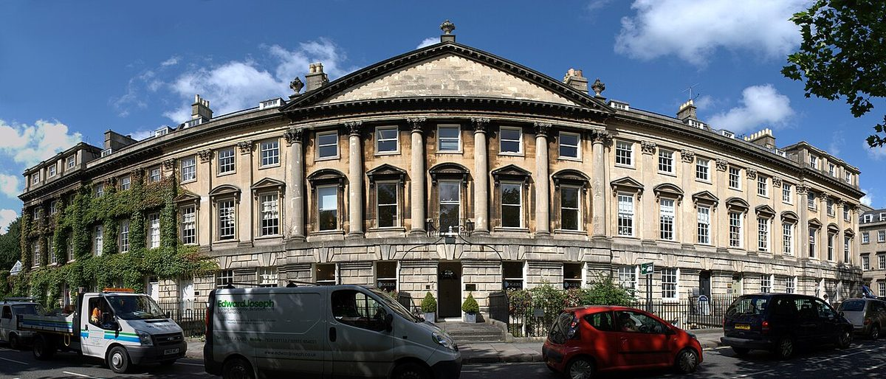

Bath is a brilliant base. Within an hour or two you can be standing at the edge of England's largest gorge, walking through a village that looks like a film set, or watching the sun rise over Stonehenge. Having lived in Bath, I've done all of these many times. Here's what's worth your time.

Cheddar Gorge & Wells
These two work beautifully together and most people do them on the same day. Start with Wells, England's smallest city, and give it a couple of hours. The Cathedral is one of the finest medieval buildings in the country and far less visited than it deserves to be. The west facade with its rows of sculpted figures is extraordinary. The medieval Vicars' Close just behind it is the oldest continuously inhabited street in Europe and looks almost completely unchanged.
From Wells, drive or bus to Cheddar. The gorge is England's largest: limestone cliffs rising up to 140 metres on either side, carved by ancient glacial meltwater. The drive through it alone is worth the trip. If you want to go further, the cliff-top walk gives you proper views across the Somerset Levels, and the caves below have their own story, including the 10,000-year-old Cheddar Man skeleton and the lead curse tablets found in the water. Buy some actual Cheddar cheese while you're there. It tastes completely different when you're eating it where it was made.
By car is easiest: Wells is about 45 minutes and Cheddar another 20 minutes beyond. By bus, take the 173/174 from Bath bus station to Wells, then the 126 to Cheddar. A day rider ticket covers all connections and is worth asking for when you board the first bus.
Castle Combe
Castle Combe is frequently called the prettiest village in England and it earns the description. There are no street lights, no TV aerials and almost no visible sign of the 21st century. The honey-coloured Cotswold stone houses, the medieval Market Cross, the bridge over the By Brook and the 13th-century church have barely changed in centuries. It has been used as a filming location for War Horse, Stardust and Doctor Dolittle, among others.
It is a small village and an hour or two is enough to walk it properly. Have lunch at the Castle Inn or the White Hart and that's your afternoon. Note that the car park is at the top of the hill, not in the village itself. Be prepared for a walk down and back up.
By car it's about 30 minutes. By public transport, take the train to Chippenham (11 minutes from Bath Spa), then the Faresaver 95/95A bus to Castle Combe Market Cross. The bus runs Monday to Saturday but is infrequent, so check times before you go.
Lacock
Lacock is another village that time appears to have left largely alone, and the National Trust has owned the whole thing since 1944, which explains why. The medieval streets, the 14th-century tithe barn and the half-timbered buildings are all intact. Lacock Abbey, built as a nunnery in the 13th century and later converted into a country house, is where William Henry Fox Talbot produced some of the earliest photographic negatives in the 1830s. The Fox Talbot Museum on site tells that story well.
Film fans will recognise it from the BBC's Pride and Prejudice, Downton Abbey and several Harry Potter scenes, the cloisters in particular. It combines well with Castle Combe if you have a car, or works on its own as a half-day trip.
By car, about 30 minutes from Bath. By public transport, take the train to Chippenham then the X34 bus to Lacock. The abbey is run by the National Trust so entry is free for members.
Bradford on Avon
Bradford on Avon is the easiest day trip from Bath and one of the most underrated. The town sits in a steep valley on the River Avon, with the same golden stone as Bath but a completely different character: smaller, quieter and genuinely lived-in. The medieval tithe barn is one of the largest and best-preserved in England. The Saxon church of St Laurence, tucked away and easily missed, is over a thousand years old.
The best way to experience it is to walk the Kennet and Avon Canal path from Bath, about 7.5 miles along the water, arriving into Bradford from the canal side. Take the train back. Or reverse it, train there and walk back to Bath. Either way you get a proper look at the Somerset countryside.
Direct trains from Bath Spa run throughout the day and take about 15 minutes. Or walk the canal towpath. Timbrell's Yard on the riverside is a good spot for lunch.
Stonehenge
Stonehenge is one of those places that delivers regardless of how many photographs you've seen of it. Standing at the edge of Salisbury Plain with the stones in front of you, you feel their scale properly. The largest stones weigh 25 tonnes and were transported from Wales over 5,000 years ago. Nobody knows precisely how or entirely why, which is part of what makes it so compelling.
Book tickets in advance, particularly for the summer months. The visitor centre is well done and gives proper context before you walk out to the stones. Avebury, another stone circle about 25 miles north, is less visited and in some ways more interesting because you can walk freely among the stones and through the village that has grown around them.
By car is by far the easiest option. By public transport, take the train to Salisbury (about an hour from Bath), then the Stonehenge Tour bus from outside the train station. Several tour operators also run day trips directly from Bath, which takes the logistics out of it entirely.
Bristol

Bristol is the obvious city day trip from Bath and it earns it. The two places feel completely different: Bath is Georgian and composed, Bristol is gritty, creative and constantly changing. Clifton Village, perched above the Avon Gorge with the Clifton Suspension Bridge, is beautiful and worth a walk through. The Harbourside has the SS Great Britain, Isambard Kingdom Brunel's extraordinary iron steamship, now a museum. The M Shed is a free museum about Bristol's history and is genuinely excellent.
Bristol is also Banksy's city. The street art is concentrated around Stokes Croft and Bedminster particularly, though pieces appear all over the city. There is no official tour and no map, which feels right. Walk and look.
For food, the Harbourside and Stokes Croft both have good independent options. St Nicholas Market in the city centre is worth a visit for lunch.
Trains from Bath Spa to Bristol Temple Meads run every 15 minutes and take about 15 minutes. It is the easiest of all these day trips to get to without a car.
Staying in Bath?
Start with the city itself. The Stepcast Bath tour covers 9 stops from Pulteney Bridge to the Royal Crescent, with audio and written commentary at each one. First 3 stops free.
Start the Bath tour →